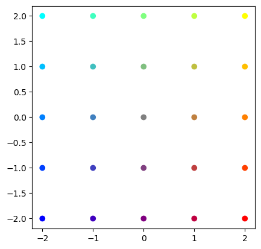
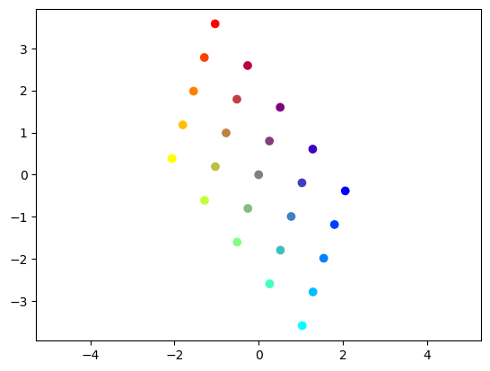
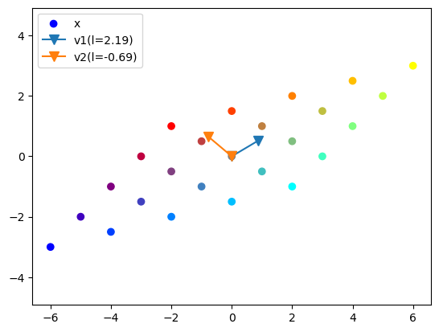
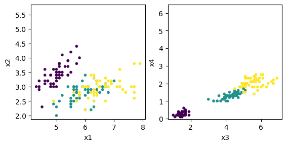
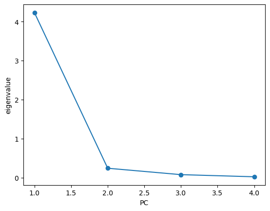
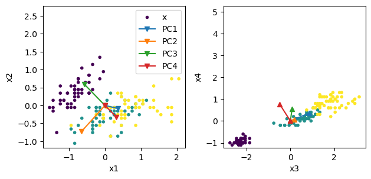
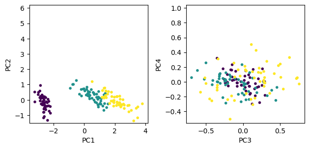
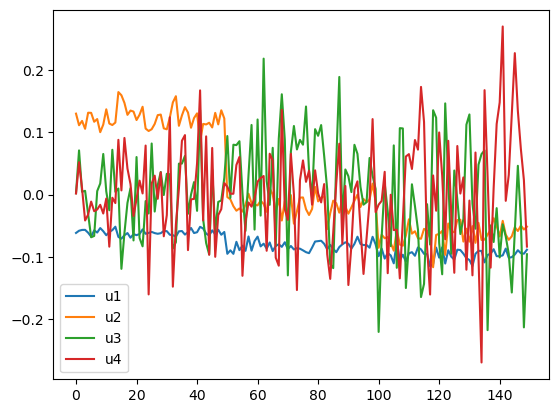
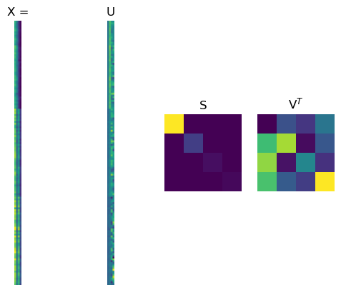
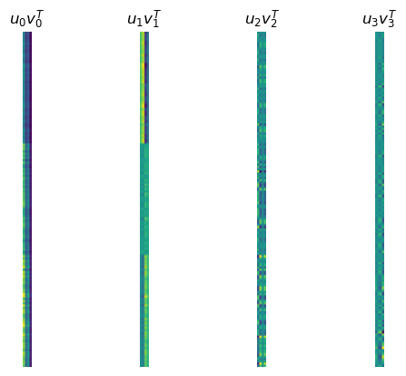

4. Vectors and Matrices#
Here we work with vectors and matrices, and get acquainted with concepts in linear algebra by computing.
import numpy as np
import matplotlib.pyplot as plt
%matplotlib inline
Numpy ndarray as vector and matrix#
You can create a matrix from a nested list.
A = np.array([[1, 2, 3], [4, 5, 6]])
A
array([[1, 2, 3],
[4, 5, 6]])
You cam create a matrix by stacking arrays vertically
b = np.array([1, 2, 3])
np.vstack((b, 2*b))
array([[1, 2, 3],
[2, 4, 6]])
# another way of stacking row vectors
np.r_[[b, 2*b]]
array([[1, 2, 3],
[2, 4, 6]])
To make a matrix from column vectors, although np.hstack just concatenates vectors
np.hstack((b, 2*b))
array([1, 2, 3, 2, 4, 6])
we can use np.c_[] expression.
np.c_[b, 2*b]
array([[1, 2],
[2, 4],
[3, 6]])
You can also create an arbitrary matrix by list comprehension.
np.array([[10*i + j for j in range(3)] for i in range(2)])
array([[ 0, 1, 2],
[10, 11, 12]])
Creating common matrices#
np.zeros((2,3))
array([[0., 0., 0.],
[0., 0., 0.]])
np.ones((2,3), dtype=int)
array([[1, 1, 1],
[1, 1, 1]])
np.eye(3)
array([[1., 0., 0.],
[0., 1., 0.],
[0., 0., 1.]])
C = np.random.randn(2,3) # normal distribution
np.random.random((2,3)) # uniform in [0, 1)
array([[0.78846866, 0.51155929, 0.80859625],
[0.73331004, 0.7570144 , 0.76123234]])
np.random.uniform(-10, 10, (2,3)) # uniform in [min, max]
array([[-0.163937 , -3.86815235, -8.91155692],
[-8.84190728, -2.26554063, 2.44270389]])
np.random.randint(-3, 4, (2,3)) # integers -3,...,3
array([[ 3, 2, 0],
[-3, -2, -3]])
np.empty((2,3)) # allocate without initialization
array([[-0.163937 , -3.86815235, -8.91155692],
[-8.84190728, -2.26554063, 2.44270389]])
Checking and setting the type and shape#
A.dtype
dtype('int64')
A.astype('float')
array([[1., 2., 3.],
[4., 5., 6.]])
len(A) # in the outmost level
2
A.shape # each dimension
(2, 3)
A.size # total items
6
A.ndim # dimension
2
A 2D numpy array is internally a linear sequence of data.
ravel( ) geves its flattened representation.
A.ravel()
array([1, 2, 3, 4, 5, 6])
The result of reshaping reflect this internal sequence.
A.reshape(3, 2)
array([[1, 2],
[3, 4],
[5, 6]])
You can excange rows and columns by transpose .T
A.T
array([[1, 4],
[2, 5],
[3, 6]])
Adressing components by [ ]#
A[1] # second row
array([4, 5, 6])
A[:,1] # second column
array([2, 5])
A[:,::-1] # columns in reverse order
array([[3, 2, 1],
[6, 5, 4]])
You can specify arbitrary order by a list of indices.
A[[1,0,1]] # rows
array([[4, 5, 6],
[1, 2, 3],
[4, 5, 6]])
A[:, [1,2,1,0]] # columns
array([[2, 3, 2, 1],
[5, 6, 5, 4]])
A[[1,0,1], [1,2,0]] # [A[1,1], A[0,2], A[1,0]]
array([5, 3, 4])
Vectors and dot product#
A vector can represent:
a point in n-dimensional space
a movement in n-dimensional space
The dot product (or inner product) of two vectors \(\b{x} = (x_1,...,x_n)\) and \(\b{y} = (y_1,...,y_n)\) is defined as
The inner product measures how two vectors match up, giving
with the maximum when two vectors line up, zero when two are orthogonal.
The length (or norm) of the vector is defined as
x = np.array([0, 1, 2])
y = np.array([3, 4, 5])
print( x * y) # component-wise product
[ 0 4 10]
There are different ways to compute a dot product of vectors:
print( np.sum(x*y))
print( np.inner(x, y))
print( np.dot(x, y))
print( x.dot(y))
print( x @ y)
14
14
14
14
14
The dot product of vectors normalized by their lengths
represents the similarity of the directions, called direction cosine.
def dircos(v1, v2):
"""direction cosine of vectors"""
return (v1 @ v2)/np.sqrt(v1@v1 * v2@v2)
dircos(x, y)
np.float64(0.8854377448471462)
dircos(x, 2*x) # same direction
np.float64(1.0)
dircos(y, -3*y) # opposite direction
np.float64(-1.0)
dircos(y, np.array([-3,1,1])) # orthogonal
np.float64(0.0)
Matrices and matrix product#
A matrix can represent
a set of vectors
time series of vectors
2D image data,
…
The matrix product \(AB\) is a matrix made of the inner products of the rows of \(A\) and the columns of \(B\).
For
\(A = \left(\begin{array}{cc} a & b\\ c & d\end{array}\right)\)
and
\(B = \left(\begin{array}{cc} e & f\\ g & h\end{array}\right)\),
the matrix product is
A = np.array([[0, 1], [2, 3]])
print(A)
B = np.array([[3, 2], [1, 0]])
print(B)
[[0 1]
[2 3]]
[[3 2]
[1 0]]
print( A * B) # component-wise
print( np.inner(A, B)) # row by row
[[0 2]
[2 0]]
[[ 2 0]
[12 2]]
There are several ways for a matrix product.
print( np.dot(A, B))
print( A.dot(B))
print( A @ B) # new since Pyton 3.5
[[1 0]
[9 4]]
[[1 0]
[9 4]]
[[1 0]
[9 4]]
Matrix and vector space#
A matrix product can mean:
transformation to another vector space
movement in the space
The product of a 2D matrix \(A\) and a vector \(\b{x}\) is given as
Specifically for unit vectors
meaning that each column of \(A\) represents how a unit vector in each axis is transformed.
# Prepare a set of points in colors
s = 2 # grid size
x = np.arange(-s, s+1)
X1, X2 = np.meshgrid(x, x)
# 2xm matrix of points
X = np.vstack((np.ravel(X1), np.ravel(X2)))
print(X)
# red-blue for x, green for y
C = (np.vstack((X[0,:], X[1,:], -X[0,:])).T + s)/(2*s)
plt.scatter(X[0,:], X[1,:], c=C)
p = plt.axis('square')
[[-2 -1 0 1 2 -2 -1 0 1 2 -2 -1 0 1 2 -2 -1 0 1 2 -2 -1 0 1
2]
[-2 -2 -2 -2 -2 -1 -1 -1 -1 -1 0 0 0 0 0 1 1 1 1 1 2 2 2 2
2]]

# See how those points are transformed by a matrix
a = 1
A = np.random.uniform(-a, a, (2,2)) # uniform in [-a, a]
print(A)
AX = A @ X
plt.scatter(AX[0,:], AX[1,:], c=C)
p = plt.axis('equal')
[[-0.77298925 -0.25589605]
[ 0.99130337 -0.79957866]]

Determinant and inverse#
The transformed space are expanded, shrunk, or flattened.
The determinant of a square matrix measures the expansion of the volume.
For a 2 by 2 matrix
\(A = \left(\begin{array}{cc} a & b\\ c & d\end{array}\right)\),
the determinant is computed by
You can use linalg.det() for any matrix.
A = np.array([[1, 2], [3, 4]])
np.linalg.det(A)
np.float64(-2.0000000000000004)
If \(\det A \ne 0\), a matrix is called regular, non-singular, or invertible.
The inverse \(A^{-1}\) of a square matrix \(A\) is defined as a matrix satisfying
where \(I\) is the identity matrix.
A = np.random.uniform(-a, a, (2,2)) # uniform in [-a, a]
Ainv = np.linalg.inv(A)
print(Ainv)
print( A @ Ainv)
print( Ainv @ A)
[[-3.33258335 2.61760131]
[-4.053755 1.95692848]]
[[1.00000000e+00 6.30002857e-18]
[1.18336048e-16 1.00000000e+00]]
[[ 1.00000000e+00 8.94893589e-17]
[-1.65065508e-16 1.00000000e+00]]
Solving linear algebraic equations#
Many problems are formed as a set of linear equations:
This can be expressed by a matrix-vector equation
where
If \(m=n\) and \(A\) is regular, the solution is given by
A = np.array([[1., 2], [3, 4]])
b = np.array([1, 2])
Ainv = np.linalg.inv(A)
print("Ainv =", Ainv)
x = Ainv @ b
print('x = Ainv b =', x)
print('Ax =', A @ x)
Ainv = [[-2. 1. ]
[ 1.5 -0.5]]
x = Ainv b = [0. 0.5]
Ax = [1. 2.]
If \(A^{-1}\) is used just once, it is more efficient to use a linear euqation solver function.
x = np.linalg.solve(A, b)
print('x = ', x)
x = [0. 0.5]
Eigenvalues and eigenvectors#
With a transformation by a symmetric matrix \(A\), some vectors keep its own direction. Such a vector is called an eigenvector and its scaling coefficient is called the eigenvalue.
Eigenvalues and eigenvectors are derived by solving the equation
which is equivalent to \( A\b{x} - \lambda \b{x} = (A - \lambda I)\b{x} = 0.\)
Eigenvalues are derived by solving a polynomial equation
You can use linalg.eig() function to numerically derive eigenvalues \(\b{\lambda} = (\lambda_1,...,\lambda_n)\) and a matrix of eigenvectors in columns \(V = (\b{v}_1,...,\b{v}_n)\).
A = np.array([[1, 2], [1, 0.5]])
print(A)
lam, V = np.linalg.eig(A)
print('eval =', lam)
print('evec =', V)
[[1. 2. ]
[1. 0.5]]
eval = [ 2.18614066 -0.68614066]
evec = [[ 0.86011126 -0.76454754]
[ 0.51010647 0.64456735]]
# colorful grid from above
AX = A @ X
plt.scatter(AX[0,:], AX[1,:], c=C)
# Plot eigen vectors scaled by eigen values
for i in range(2):
plt.plot( [0, V[0,i]], [0, V[1,i]], 'v-', ms=8)
#plt.plot( [0, lam[i]*V[0,i]], [0, lam[i]*V[1,i]], 'o-', lw=3)
p = plt.axis('equal')
plt.legend(('x',F'v1(l={lam[0]:.2f})',F'v2(l={lam[1]:.2f})'));

For a 2 by 2 matrix
We can analytically derive the eigenvalues from
as
If off-diagonal components \(b\) and \(c\) are in opposite signs, \(\frac{(a-d)^2}{4}+ bc\) can be negative and the eigen values can be complex numbers.
Complex eigenvalues are associated with rotating transformations. Please see the section on Eigenvalues for intuitive explanation.
For a symmetric matrix, \(bc=b^2\ge 0\) so that the eigenvalues are guaranteed to be real.
Eigendecomposition#
For a square matrix \(A\), consider a matrix consisting of its eigenvalues on the diagonal
and another matrix made of their eigenvectors in columns
From
if \(V\) is invertible, \(A\) can be represented as
This representation of a matrix is called eigendecomposition or spectral decomposition.
This representation is extremely useful in multiplying \(A\) many times as
requires only exponentials in the diagonal terms rather than repeated matrix multiplications.
It also helps intuitive understanding of how a point \(\b{x}\) transformed by \(A\) many times as \(A\b{x}, A^2\b{x}, A^3\b{x},...\) would move.
print(A)
lam, V = np.linalg.eig(A)
Vinv = np.linalg.inv(V)
print(V @ np.diag(lam) @ Vinv)
[[1. 2. ]
[1. 0.5]]
[[1. 2. ]
[1. 0.5]]
# nth power of A
n = 10
B = A
%time for i in range(1,n): B = B @ A
print(B)
%time C = V @ np.diag(lam**n) @ Vinv
print(C)
CPU times: user 7 µs, sys: 0 ns, total: 7 µs
Wall time: 7.87 µs
[[1463.6953125 1736.12109375]
[ 868.06054688 1029.66503906]]
CPU times: user 7 µs, sys: 0 ns, total: 7 µs
Wall time: 9.06 µs
[[1463.6953125 1736.12109375]
[ 868.06054687 1029.66503906]]
Covariance matrix#
For \(m\) samples of \(n\)-dimensional variable \( \b{x} = (x_1,..., x_n)\) we usuall create a data matrix
The covariance \(c_{ij}\) of the components \(x_i\) and \(x_j\) represents how the two variables change together around the mean:
The covariance matrix \(C\) consists of the covariances of all pairs of components
where \(\bar{x}\) is the mean vector
# Read in the iris data
from sklearn import datasets
iris = datasets.load_iris()
print(iris)
{'data': array([[5.1, 3.5, 1.4, 0.2],
[4.9, 3. , 1.4, 0.2],
[4.7, 3.2, 1.3, 0.2],
[4.6, 3.1, 1.5, 0.2],
[5. , 3.6, 1.4, 0.2],
[5.4, 3.9, 1.7, 0.4],
[4.6, 3.4, 1.4, 0.3],
[5. , 3.4, 1.5, 0.2],
[4.4, 2.9, 1.4, 0.2],
[4.9, 3.1, 1.5, 0.1],
[5.4, 3.7, 1.5, 0.2],
[4.8, 3.4, 1.6, 0.2],
[4.8, 3. , 1.4, 0.1],
[4.3, 3. , 1.1, 0.1],
[5.8, 4. , 1.2, 0.2],
[5.7, 4.4, 1.5, 0.4],
[5.4, 3.9, 1.3, 0.4],
[5.1, 3.5, 1.4, 0.3],
[5.7, 3.8, 1.7, 0.3],
[5.1, 3.8, 1.5, 0.3],
[5.4, 3.4, 1.7, 0.2],
[5.1, 3.7, 1.5, 0.4],
[4.6, 3.6, 1. , 0.2],
[5.1, 3.3, 1.7, 0.5],
[4.8, 3.4, 1.9, 0.2],
[5. , 3. , 1.6, 0.2],
[5. , 3.4, 1.6, 0.4],
[5.2, 3.5, 1.5, 0.2],
[5.2, 3.4, 1.4, 0.2],
[4.7, 3.2, 1.6, 0.2],
[4.8, 3.1, 1.6, 0.2],
[5.4, 3.4, 1.5, 0.4],
[5.2, 4.1, 1.5, 0.1],
[5.5, 4.2, 1.4, 0.2],
[4.9, 3.1, 1.5, 0.2],
[5. , 3.2, 1.2, 0.2],
[5.5, 3.5, 1.3, 0.2],
[4.9, 3.6, 1.4, 0.1],
[4.4, 3. , 1.3, 0.2],
[5.1, 3.4, 1.5, 0.2],
[5. , 3.5, 1.3, 0.3],
[4.5, 2.3, 1.3, 0.3],
[4.4, 3.2, 1.3, 0.2],
[5. , 3.5, 1.6, 0.6],
[5.1, 3.8, 1.9, 0.4],
[4.8, 3. , 1.4, 0.3],
[5.1, 3.8, 1.6, 0.2],
[4.6, 3.2, 1.4, 0.2],
[5.3, 3.7, 1.5, 0.2],
[5. , 3.3, 1.4, 0.2],
[7. , 3.2, 4.7, 1.4],
[6.4, 3.2, 4.5, 1.5],
[6.9, 3.1, 4.9, 1.5],
[5.5, 2.3, 4. , 1.3],
[6.5, 2.8, 4.6, 1.5],
[5.7, 2.8, 4.5, 1.3],
[6.3, 3.3, 4.7, 1.6],
[4.9, 2.4, 3.3, 1. ],
[6.6, 2.9, 4.6, 1.3],
[5.2, 2.7, 3.9, 1.4],
[5. , 2. , 3.5, 1. ],
[5.9, 3. , 4.2, 1.5],
[6. , 2.2, 4. , 1. ],
[6.1, 2.9, 4.7, 1.4],
[5.6, 2.9, 3.6, 1.3],
[6.7, 3.1, 4.4, 1.4],
[5.6, 3. , 4.5, 1.5],
[5.8, 2.7, 4.1, 1. ],
[6.2, 2.2, 4.5, 1.5],
[5.6, 2.5, 3.9, 1.1],
[5.9, 3.2, 4.8, 1.8],
[6.1, 2.8, 4. , 1.3],
[6.3, 2.5, 4.9, 1.5],
[6.1, 2.8, 4.7, 1.2],
[6.4, 2.9, 4.3, 1.3],
[6.6, 3. , 4.4, 1.4],
[6.8, 2.8, 4.8, 1.4],
[6.7, 3. , 5. , 1.7],
[6. , 2.9, 4.5, 1.5],
[5.7, 2.6, 3.5, 1. ],
[5.5, 2.4, 3.8, 1.1],
[5.5, 2.4, 3.7, 1. ],
[5.8, 2.7, 3.9, 1.2],
[6. , 2.7, 5.1, 1.6],
[5.4, 3. , 4.5, 1.5],
[6. , 3.4, 4.5, 1.6],
[6.7, 3.1, 4.7, 1.5],
[6.3, 2.3, 4.4, 1.3],
[5.6, 3. , 4.1, 1.3],
[5.5, 2.5, 4. , 1.3],
[5.5, 2.6, 4.4, 1.2],
[6.1, 3. , 4.6, 1.4],
[5.8, 2.6, 4. , 1.2],
[5. , 2.3, 3.3, 1. ],
[5.6, 2.7, 4.2, 1.3],
[5.7, 3. , 4.2, 1.2],
[5.7, 2.9, 4.2, 1.3],
[6.2, 2.9, 4.3, 1.3],
[5.1, 2.5, 3. , 1.1],
[5.7, 2.8, 4.1, 1.3],
[6.3, 3.3, 6. , 2.5],
[5.8, 2.7, 5.1, 1.9],
[7.1, 3. , 5.9, 2.1],
[6.3, 2.9, 5.6, 1.8],
[6.5, 3. , 5.8, 2.2],
[7.6, 3. , 6.6, 2.1],
[4.9, 2.5, 4.5, 1.7],
[7.3, 2.9, 6.3, 1.8],
[6.7, 2.5, 5.8, 1.8],
[7.2, 3.6, 6.1, 2.5],
[6.5, 3.2, 5.1, 2. ],
[6.4, 2.7, 5.3, 1.9],
[6.8, 3. , 5.5, 2.1],
[5.7, 2.5, 5. , 2. ],
[5.8, 2.8, 5.1, 2.4],
[6.4, 3.2, 5.3, 2.3],
[6.5, 3. , 5.5, 1.8],
[7.7, 3.8, 6.7, 2.2],
[7.7, 2.6, 6.9, 2.3],
[6. , 2.2, 5. , 1.5],
[6.9, 3.2, 5.7, 2.3],
[5.6, 2.8, 4.9, 2. ],
[7.7, 2.8, 6.7, 2. ],
[6.3, 2.7, 4.9, 1.8],
[6.7, 3.3, 5.7, 2.1],
[7.2, 3.2, 6. , 1.8],
[6.2, 2.8, 4.8, 1.8],
[6.1, 3. , 4.9, 1.8],
[6.4, 2.8, 5.6, 2.1],
[7.2, 3. , 5.8, 1.6],
[7.4, 2.8, 6.1, 1.9],
[7.9, 3.8, 6.4, 2. ],
[6.4, 2.8, 5.6, 2.2],
[6.3, 2.8, 5.1, 1.5],
[6.1, 2.6, 5.6, 1.4],
[7.7, 3. , 6.1, 2.3],
[6.3, 3.4, 5.6, 2.4],
[6.4, 3.1, 5.5, 1.8],
[6. , 3. , 4.8, 1.8],
[6.9, 3.1, 5.4, 2.1],
[6.7, 3.1, 5.6, 2.4],
[6.9, 3.1, 5.1, 2.3],
[5.8, 2.7, 5.1, 1.9],
[6.8, 3.2, 5.9, 2.3],
[6.7, 3.3, 5.7, 2.5],
[6.7, 3. , 5.2, 2.3],
[6.3, 2.5, 5. , 1.9],
[6.5, 3. , 5.2, 2. ],
[6.2, 3.4, 5.4, 2.3],
[5.9, 3. , 5.1, 1.8]]), 'target': array([0, 0, 0, 0, 0, 0, 0, 0, 0, 0, 0, 0, 0, 0, 0, 0, 0, 0, 0, 0, 0, 0,
0, 0, 0, 0, 0, 0, 0, 0, 0, 0, 0, 0, 0, 0, 0, 0, 0, 0, 0, 0, 0, 0,
0, 0, 0, 0, 0, 0, 1, 1, 1, 1, 1, 1, 1, 1, 1, 1, 1, 1, 1, 1, 1, 1,
1, 1, 1, 1, 1, 1, 1, 1, 1, 1, 1, 1, 1, 1, 1, 1, 1, 1, 1, 1, 1, 1,
1, 1, 1, 1, 1, 1, 1, 1, 1, 1, 1, 1, 2, 2, 2, 2, 2, 2, 2, 2, 2, 2,
2, 2, 2, 2, 2, 2, 2, 2, 2, 2, 2, 2, 2, 2, 2, 2, 2, 2, 2, 2, 2, 2,
2, 2, 2, 2, 2, 2, 2, 2, 2, 2, 2, 2, 2, 2, 2, 2, 2, 2]), 'frame': None, 'target_names': array(['setosa', 'versicolor', 'virginica'], dtype='<U10'), 'DESCR': '.. _iris_dataset:\n\nIris plants dataset\n--------------------\n\n**Data Set Characteristics:**\n\n:Number of Instances: 150 (50 in each of three classes)\n:Number of Attributes: 4 numeric, predictive attributes and the class\n:Attribute Information:\n - sepal length in cm\n - sepal width in cm\n - petal length in cm\n - petal width in cm\n - class:\n - Iris-Setosa\n - Iris-Versicolour\n - Iris-Virginica\n\n:Summary Statistics:\n\n============== ==== ==== ======= ===== ====================\n Min Max Mean SD Class Correlation\n============== ==== ==== ======= ===== ====================\nsepal length: 4.3 7.9 5.84 0.83 0.7826\nsepal width: 2.0 4.4 3.05 0.43 -0.4194\npetal length: 1.0 6.9 3.76 1.76 0.9490 (high!)\npetal width: 0.1 2.5 1.20 0.76 0.9565 (high!)\n============== ==== ==== ======= ===== ====================\n\n:Missing Attribute Values: None\n:Class Distribution: 33.3% for each of 3 classes.\n:Creator: R.A. Fisher\n:Donor: Michael Marshall (MARSHALL%PLU@io.arc.nasa.gov)\n:Date: July, 1988\n\nThe famous Iris database, first used by Sir R.A. Fisher. The dataset is taken\nfrom Fisher\'s paper. Note that it\'s the same as in R, but not as in the UCI\nMachine Learning Repository, which has two wrong data points.\n\nThis is perhaps the best known database to be found in the\npattern recognition literature. Fisher\'s paper is a classic in the field and\nis referenced frequently to this day. (See Duda & Hart, for example.) The\ndata set contains 3 classes of 50 instances each, where each class refers to a\ntype of iris plant. One class is linearly separable from the other 2; the\nlatter are NOT linearly separable from each other.\n\n.. dropdown:: References\n\n - Fisher, R.A. "The use of multiple measurements in taxonomic problems"\n Annual Eugenics, 7, Part II, 179-188 (1936); also in "Contributions to\n Mathematical Statistics" (John Wiley, NY, 1950).\n - Duda, R.O., & Hart, P.E. (1973) Pattern Classification and Scene Analysis.\n (Q327.D83) John Wiley & Sons. ISBN 0-471-22361-1. See page 218.\n - Dasarathy, B.V. (1980) "Nosing Around the Neighborhood: A New System\n Structure and Classification Rule for Recognition in Partially Exposed\n Environments". IEEE Transactions on Pattern Analysis and Machine\n Intelligence, Vol. PAMI-2, No. 1, 67-71.\n - Gates, G.W. (1972) "The Reduced Nearest Neighbor Rule". IEEE Transactions\n on Information Theory, May 1972, 431-433.\n - See also: 1988 MLC Proceedings, 54-64. Cheeseman et al"s AUTOCLASS II\n conceptual clustering system finds 3 classes in the data.\n - Many, many more ...\n', 'feature_names': ['sepal length (cm)', 'sepal width (cm)', 'petal length (cm)', 'petal width (cm)'], 'filename': 'iris.csv', 'data_module': 'sklearn.datasets.data'}
X = iris.data
Y = iris.target
m, n = X.shape
print(m, n)
150 4
plt.subplot(1, 2, 1)
plt.scatter(X[:,0], X[:,1], c=Y, marker='.')
plt.axis('square'); plt.xlabel('x1'); plt.ylabel('x2');
plt.subplot(1, 2, 2)
plt.scatter(X[:,2], X[:,3], c=Y, marker='.')
plt.axis('square'); plt.xlabel('x3'); plt.ylabel('x4');

xbar = np.mean(X, axis=0)
print("xbar =", xbar)
dX = X - xbar # deviation from the mean
C = (dX.T @ dX)/(m-1)
print("C =", C)
# or using the built-in function
np.cov(X, rowvar=False)
xbar = [5.84333333 3.05733333 3.758 1.19933333]
C = [[ 0.68569351 -0.042434 1.27431544 0.51627069]
[-0.042434 0.18997942 -0.32965638 -0.12163937]
[ 1.27431544 -0.32965638 3.11627785 1.2956094 ]
[ 0.51627069 -0.12163937 1.2956094 0.58100626]]
array([[ 0.68569351, -0.042434 , 1.27431544, 0.51627069],
[-0.042434 , 0.18997942, -0.32965638, -0.12163937],
[ 1.27431544, -0.32965638, 3.11627785, 1.2956094 ],
[ 0.51627069, -0.12163937, 1.2956094 , 0.58100626]])
Principal component analysis (PCA)#
In taking a grasp of high-dimensional data, it is often useful to project the data onto a subspace where the data vary most.
To do that, we first take the covariance matrix \(C\) of the data, compute its eigenvalues \(\lambda_i\) and eigenvectors \(\b{v}_i\), and project the data onto the subspace spanned by the eigenvectors with largest eigenvalues.
The eigenvectors \(\b{v}_i\) of the covariance matrix is called principal component vectors, ordered by the magnitude of their eigenvalues.
Each data point \(\b{x}\) is projected to the principal component vectors \((\b{v}_1\cdot\b{x}, \b{v}_2\cdot\b{x},...)\) for visualization.
def pca(X):
"""Principal Component Analysis of data matrix X = (x1,...,xn).T"""
C = np.cov(X, rowvar=False)
lam, V = np.linalg.eig(C)
# it is not guaranteed that the eigenvalues are sorted, so sort them
ind = np.argsort(-lam) # indices for sorting, descending order
lams = lam[ind]
Vs = V[:,ind]
return lams, Vs
lam, V = pca(X)
plt.plot(np.arange(1,n+1), lam, 'o-')
plt.xlabel('PC'); plt.ylabel('eigenvalue')
Text(0, 0.5, 'eigenvalue')

Let us see the principal component vectors in the original space.
zero = np.zeros(n)
# first two components
plt.subplot(1, 2, 1)
plt.scatter(dX[:,0], dX[:,1], c=Y, marker='.')
for i in range(4):
plt.plot( [0, V[0,i]], [0, V[1,i]], 'v-', markersize=6)
#plt.plot( [0, lam[i]*V[0,i]], [0, lam[i]*V[1,i]], 'o-', lw=2)
plt.axis('square'); plt.xlabel('x1'); plt.ylabel('x2');
plt.legend(('x','PC1','PC2','PC3','PC4'))
# last two components
plt.subplot(1, 2, 2)
plt.scatter(dX[:,2], dX[:,3], c=Y, marker='.')
for i in range(4):
plt.plot( [0, V[2,i]], [0, V[3,i]], '^-', markersize=6)
#plt.plot( [0, lam[i]*V[2,i]], [0, lam[i]*V[3,i]], 'o-', lw=2)
plt.axis('square'); plt.xlabel('x3'); plt.ylabel('x4');
plt.tight_layout() # adjust space

Now let us project the 4D data onto the space spanned by the eigenvectors.
Z = dX @ V # projection to PC
plt.subplot(1, 2, 1)
plt.scatter(Z[:,0], Z[:,1], c=Y, marker='.')
plt.axis('square'); plt.xlabel('PC1'); plt.ylabel('PC2');
plt.subplot(1, 2, 2)
plt.scatter(Z[:,2], Z[:,3], c=Y, marker='.')
plt.axis('square'); plt.xlabel('PC3'); plt.ylabel('PC4');
plt.tight_layout() # adjust space

Singular value decomposition (SVD)#
For a \((m\times n)\) matrix \(A\), a non-negative value \(\sigma>0\) satisfying
for unit vectors \(||\b{u}||=||\b{v}||=1\) is called the singular value.
\(\b{u}\) and \(\b{v}\) are called left- and right-singular vectors.
Singular value decomposition (SVD) of a \((m\times n)\) matrix \(A\) is
where \(S=\mbox{diag}(\sigma_1,...,\sigma_k)\) is a diagonal matrix made of \(k=\min(m,n)\) singular values,
\(U=(\b{u}_1,...,\b{u}_k)\) is a matrix made of orthogonal left-singular vectors,
and \(V=(\b{v}_1,...,\b{v}_k)\) is a matrix made of orthogonal right-singular vectors.
SVD represents a matrix by a weighted sum of outer products of column vectors \(\b{u}_i\) and row vectors \(\b{v}_i\), such as spatial patterns mixed by different time courses.
A = np.array([[0,1,2,3,4], [5,4,3,2,1], [1,3,2,4,3]])
print(A)
U, S, Vt = np.linalg.svd(A, full_matrices=False)
#V = Vt.T
print(U, S, Vt)
U @ np.diag(S) @ Vt
[[0 1 2 3 4]
[5 4 3 2 1]
[1 3 2 4 3]]
[[-0.45492565 0.62035527 -0.63890687]
[-0.65816895 -0.71750629 -0.22803148]
[-0.59988023 0.3167713 0.7347106 ]] [9.99063921 4.76417727 1.22055035] [[-0.38943704 -0.48918213 -0.40879452 -0.50853961 -0.42815201]
[-0.686532 -0.27273461 -0.05840793 0.35538947 0.56971614]
[-0.33218358 0.53508568 -0.40349583 0.46377343 -0.47480808]]
array([[5.89313419e-16, 1.00000000e+00, 2.00000000e+00, 3.00000000e+00,
4.00000000e+00],
[5.00000000e+00, 4.00000000e+00, 3.00000000e+00, 2.00000000e+00,
1.00000000e+00],
[1.00000000e+00, 3.00000000e+00, 2.00000000e+00, 4.00000000e+00,
3.00000000e+00]])
U, S, Vt = np.linalg.svd(X, full_matrices=False)
print('S =', S)
plt.plot(U);
plt.legend(('u1','u2','u3','u4'));
S = [95.95991387 17.76103366 3.46093093 1.88482631]

In this example, the first component captures the average pattern and the second component captures the species difference.
plt.subplot(1,4,1)
plt.imshow(X)
plt.title('X ='); plt.axis('off')
plt.subplot(1,4,2)
plt.imshow(U)
plt.title('U'); plt.axis('off')
plt.subplot(1,4,3)
plt.imshow(np.diag(S))
plt.title('S'); plt.axis('off')
plt.subplot(1,4,4)
plt.imshow(Vt)
plt.title('V$^T$'); plt.axis('off');

k = 4
for i in range(k):
plt.subplot(1,k,i+1)
plt.imshow(np.outer(U[:,i], Vt[i,:]))
plt.title('$u_{0} v^T_{0}$'.format(i))
plt.axis('off');

PCA by SVD#
From \(X = U SV^T\) and the orthonormal construction of \(U\) and \(V\), we can see
and
Thus columns of \(V\) are principal component vectors and \(\frac{\sigma_i^2}{m-1}\) are their eigenvalues.
# iris data
print('by cov and eig: l =', lam, '\nV =', V) # computed by eig of covariance matrix
U, S, Vt = np.linalg.svd(dX, full_matrices=False)
print('by SVD: l =', S**2/(m-1),'\nV =', Vt.T)
by cov and eig: l = [4.22824171 0.24267075 0.0782095 0.02383509]
V = [[ 0.36138659 -0.65658877 -0.58202985 0.31548719]
[-0.08452251 -0.73016143 0.59791083 -0.3197231 ]
[ 0.85667061 0.17337266 0.07623608 -0.47983899]
[ 0.3582892 0.07548102 0.54583143 0.75365743]]
by SVD: l = [4.22824171 0.24267075 0.0782095 0.02383509]
V = [[ 0.36138659 -0.65658877 0.58202985 0.31548719]
[-0.08452251 -0.73016143 -0.59791083 -0.3197231 ]
[ 0.85667061 0.17337266 -0.07623608 -0.47983899]
[ 0.3582892 0.07548102 -0.54583143 0.75365743]]